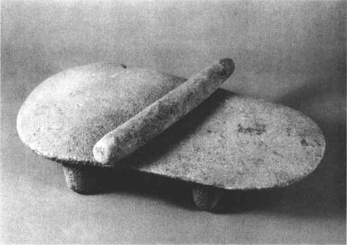

古代礼器是在日用器物的基础上发展形成的。在此，我们首先讨论日用器物的产生问题。
人类诞生之后，便摆脱了仅仅利用天然“工具”的那种出于动物本能的“劳动”形式，跃进到制造和使用工具的劳动阶段。也就是说，人类最初制造的器物，首先是生产工具。从这一意义上说，人类在最初还谈不上有什么严格意义的日用器物，因为那时的生产和生活水平实在是太低了。只是由于生活的一些起码的需要，有些生产工具兼具生活用器的功能，因而生产工具与生活用器常常是同一的。例如一根加过工的木棒，本用于狩猎，在人们需要时，又可用作手杖或烤肉的支架。又如一件石刀，既可用于剥削兽皮，又可充作切肉的餐刀。总之，人类要生存，就必须从事物质资料的生产，以期尽可能地提供自己最低限度几乎毫无保障的需要。那时所谓生活日用器物是十分粗糙简陋的。
经过长期艰苦的劳动，生产有了发展，人类自身的体质、智力也有了提高。于是生活器用方面的某些需求日益迫切而且器物的制作也有了可能。从出土实物看，在旧石器时代中、晚期的很多遗址中，如辽宁海城小孤山、北京周口店山顶洞、宁夏水洞沟等遗址，都有骨针、骨锥的发现。山顶洞的骨针长82毫米，最大直径3.3毫米。而小孤山的骨针针鼻仍十分完好，显示了当时人类高超的钻孔技术。这些骨针，针体滑润，针尖圆锐，说明当时人类已掌握了较熟练的缝纫技术。（图24—1）上述骨针、骨锥既是生产工具，也可作为中国古代最早的日用器物的代表。山顶洞人及同时期的人类，已经过着渔猎和采集的生活。他们既然已能用针缝制兽皮衣服，那么他们完全可能缝制皮囊之类的东西，或缝制树皮器物，以为渔猎、采集等生活日用容器。原始人在创造日用器物方面，常有些“高招”，使在今人看来非常棘手的问题迎刃而解。这通过有关古典文献和民族学的材料可以证明。例如：人们能利用某种树皮制造他们所需的器物，甚至还可以做成“锅”，我国北方的一些古老民族，就是用桦树皮“锅”煮水、做饭的。而拉布拉多的印第安人的“全部家庭设备，实际上都是用桦树皮按几何形状‘缝制’成功的”［1］。更有趣的是，人们竟然还能把面包树、无花果树、桑树或杉树的树皮做成“布”。方法是：“（把）树皮加以浸泡棒打，变成一种光滑材料——树皮布……其最重要的分布中心是印度尼西亚和玻利尼西亚，称为‘塔帕（tapa）’。欧洲和亚洲许多史前民族也知道树皮布。”［2］这使我们知道，原始人在没有发明麻布以前，并非只会用兽皮做衣服。至于在没有桦树的地方，人们又拿什么做“锅”呢？如果那里生长着竹子，人们就会用一端带竹节的竹筒做“锅”，把谷物放在竹筒内，加水，将另一端堵死，放在火上烧烤。不久，里面的饭就熟了，此法沿用至今。如果某地连竹子也没有，或者人们还不会用树皮、竹子做“锅”，又如何做饭呢？《艺文类聚·食物部》引《古史考》说：“神农时，民食谷，释米加烧石上而食之。”这就是所谓石炙法。同时还有石烹法，即将烧石不断投入盛有水和食物的容器内，使之煮熟。凌纯声在《松花江下游的赫哲族》一书记述赫哲人“在用铁锅煮物以前，没有知道制造陶器，在他们的传说中……用极大的木盆一个，内盛水，将肉放在其中，以石块烧红，立刻浸入大盆水中，如是数次即水沸肉熟”。于省吾先生即结合凌氏等人的资料，考证甲骨文中的庶字是“‘从火石、石亦声’的会意兼形声字，也即煮之本字”。“庶之本义乃以火燃石而煮，是根据古人实际生活而象意依声以造字的。”［3］由此，我们则进而可知我国中原地区的祖先，也和其他民族的祖先一样谙熟石烹法。有人认为陕西蓝田锡水洞发现的烧石，即蓝田猿人的石烹遗物。此外，动物的胃也是一种现成而常用的“锅”。
图24-1 山顶洞人磨制的骨针
约在公元前6000多年，我国主要地区进入了新石器时代。这个时期的主要特点，就是人们发明了磨制石器、制陶和纺织，磨制石器，使生产效率和生活质量大为提高。（图24—2）而制陶的发明，对于人类日用器物的改善与丰富，具有极其伟大的意义，它使人类找到了制造日用器物最便当、最广阔的一种途径。直至当代人类也离不开它。至于纺织的发明，对人类生活的意义是不言而喻的，另有专文论述这里不作赘叙。这个时期，竹木器和牙骨器的制作，也取得了很大的进步，不仅在仰韶文化（前5000—前3000）的陶器上见有篮纹、席纹，有的房子的墙是用编篱涂泥的方法修筑的。而且在河姆渡文化（前5000—前3000）的遗物中，还发现了苇席残片和瓜棱圆木碗。后者并髹有朱红生漆，是已知我国最早的漆器。该文化遗存中的木建筑构件，使用了榫卯结构，技术已相当进步。钱山漾遗址（前3300—前2600）所出竹木器尤为著名。其中竹编器达二百多件，品种有篮、篓、簸箕、竹席等。牙骨器，仅看河姆渡出土的骨匕、骨匙、骨笄和加工精细的象牙小盅，便可知此时的成就了。

图24-2 裴李岗文化的谷物加工器具——经过磨制的石磨盘和石磨棒
新石器时代是发生两次社会大分工的时期，生产力有了空前的发展。第二次大分工，使手工业成为独立的一个生产部门，这又进一步导致玉器工艺、特别是铜器工艺的兴起。在山东、河北、河南的龙山文化遗址中，都有小件红铜器的发现。甘肃武威皇娘娘台、临夏大何庄和秦魏家等齐家文化遗址中发现尤多，其中少数为青铜器。甘肃东乡林家的仰韶文化马家窑类型遗址所出青铜刀，是目前最早的青铜器（前3000）。［4］青海贵南县尕马台和甘肃广河县齐家坪出土的铜镜，是已知最早的大件青铜日用器物（前2000）。［5］所谓红铜，是未曾有意加入其他金属成分的天然铜。一般是人类首先制造出红铜器。由于红铜的熔点高、质地软，用它制造器物受到很大限制。后来随着时代的进步，人们发明了冶铸青铜器。青铜一般是锡铜合金，也称锡青铜，此外还有铅青铜、铝青铜等，它们具有熔点低、硬度大等优点。早期铜器的出现，表明我们的祖先已开始认识了金属的可熔性和延展性，掌握了锻打或冶炼金属的初步方法，从而为青铜时代的到来打开了大门。由于铜金属特有的坚韧性和可塑性，为古代器物的发展开拓了广阔的前景，更由于它的金灿灿的光彩和昂贵的价值，又为古代礼器的兴盛提供了重要的物质刺激。
春秋战国之际，奴隶制的生产关系再也不能适应日益发展的生产力，铁器的出现是生产力提高的重要标志。从商代开始出现的原始瓷器，在东汉时期发展为成熟的瓷器，自新石器时代即已萌芽的漆器，经商周至战国，也臻于精美。所有这些新材质的器种，都为古代日用器物的发展，提供了更加广袤的天地，而日用器物的日益丰富，也为新材质开辟了前所未有的发展道路。此外，玻璃器、金银器、珐琅器等器种，虽然在我国古器物中占有光辉的一席，但多未进入日用品的行列，或者有的器物很晚才成为人民的日用器物，故不再胪列。
各种日用器物的产生，是人类在利用、改造自然的斗争中，不断积累各种生产、生活经验的结果，是人类自身——包括体质和智力不断提高的结果，而所有这些点滴进步的孕育者，则是千百万年的艰苦劳动——包括脑力的和体力的劳动。
所谓礼器，一般认为是古代贵族在进行祭祀、丧葬、朝聘、征伐和宴享、婚冠等活动时举行礼仪所使用的器皿，指青铜器中的鼎、簋、觚、豆和钟、镈等。此外，还有更广义的一种理解，即把原始部落的酋长直至封建帝王用于上列礼仪的器物，均视为礼器，而在器种上不仅限于铜器。本章对礼器的阐释，主要是就前者而言的。
礼器自然是随着礼仪的出现而产生的。礼作为上层建筑的一种构成部分，是在生产发展到一定阶段后逐渐形成的。《礼记·礼运》说：“夫礼之初，始诸饮食，其燔黍捭豚，汙尊而抔饮，蒉桴而土鼓，犹若可以致其敬于鬼神。”［6］这里说的虽是吉礼，但也有一定普遍意义。从中可以看出“礼”之兴起，是为了致敬于鬼神，说明礼与原始宗教有密切的关系。其次，所用以表示敬意之物，乃是饮食，“民以食为天”，鬼神亦然。至于所用之器，不过人类日常所用极其简陋的器物。随着社会的发展，这些都起了变化。
原始宗教，最初表现为迷信灵魂，进而发展到认为“万物有灵”及图腾主义。最后几乎无所不拜，如“生殖崇拜”、“工具崇拜”以及对日、月、山、川、风、雨、水、火等自然物象的“自然崇拜”。山顶洞人为死者放置了随葬品，并在遗体上撒了赤铁矿粉；仰韶文化遗址中的少儿瓮棺设有“魂孔”；庙底沟二期文化遗址华县泉护村及信阳三里店等地很多地点出土了所谓陶祖或石祖（即陶制或石制男性生殖器）。新疆天山发现的原始人类生殖崇拜岩雕画、辽宁喀左和凌源红山文化遗址出土了裸体孕妇陶塑［7］等，均是证明。随着私有制的确立，氏族首领以及氏族部落首领的权力越来越大，他们一面把尽可能多的财富攫为己有，同时日益乞灵于宗教，以巩固自己的地位。在敬奉鬼神、祖先以及百神、天地当中，一些特用器物也罩上了灵光。在山东日照两城镇出土了刻有商周青铜礼器才特有的云雷纹、饕餮纹的玉斧［8］和磨光黑陶片［9］。这件玉斧与同出的玉铲、玉刀等加工精细，厚仅0.2厘米至0.5厘米。三里河墓葬也有成组玉器出土，这都表明玉质礼器已登上祭坛。尤其值得注意的是，在良渚文化诸遗址发现了很多玉琮、玉璧等礼器，形大工精。（图24—3）寺墩的一件玉琮高达23厘米。［10］草鞋山的一件玉璧直径达21厘米。还有的玉琮刻有精细的兽面纹饰。［11］《周礼·春官·大宗伯》载：“以苍璧礼天，以黄琮礼地。”这些祭祀天地的琮、璧及前述礼仪上用的玉斧、玉铲、玉刀，还说明在新石器时代晚期，礼器就随着阶级的分化而出现，并且渐渐越过了“燔黍捭豚”、“汙尊抔饮”以敬鬼神的阶段，达到了较高的水平，并为古代礼器的兴盛开拓了道路。
图24-3 良渚文化遗物玉琮
进入奴隶社会以后，奴隶主政权进一步被神化，其统治秩序尤其是等级制度进一步礼制化，作为这一秩序和制度的体现物——礼器，也随之日趋完备和制度化。毫无疑问，礼器在这一历史时期，对于奴隶制度的确立、发展，起了积极的作用。二里头文化是我国早期的青铜时代文化。在该文化遗址中已出现了青铜礼器爵和斝，而且爵的数量还比较多，它们是目前已知最早的青铜容器和礼器。同时还发现了珪、璋、琮、钺、戈、柄形器等玉质礼器。《左传·昭公五年》记载：“朝聘有珪，享有璋。”可见珪、璋的出现反映着礼制和礼器又有了发展。至商代早期，使用礼器采取系列化配合形式，常有成套的青铜礼器出土。这时的礼器主要有鼎、鬲、盘、尊、罍、爵、斝、觚。例如1974年郑州杜岭街出土的两件大铜方鼎，形大质朴，一件高1米，重84.6千克。另一件高87厘米，重64.25千克。可能是商王室使用的“宝器”。1982年郑州一处铜器窖藏，出土有13件青铜器，除类似前述的方鼎外，还有首次发现的青铜圆鼎和铜卣。商代晚期至西周时期，奴隶制臻于鼎盛阶段，青铜礼器也伴随着礼制的隆盛而日益考究。不仅器类丰富了，更重要的是各种器物的组合，也明显地礼制化。西周前期用鼎已经出现了多个大小相次的组合，后期则愈为完备。《春秋公羊传·桓公二年》何休解诂云：“礼祭：天子九鼎、诸侯七、卿大夫五、元士三也。”而且各级鼎的盛放物品也各有规定。如天子的第一鼎盛牛，以下盛羊、猪、鱼、肉脯、肠胃、肤、鲜鱼、鲜腊。诸侯的鼎内则去后二味。卿大夫的第一鼎盛羊，以下有猪、鱼、腊、肠胃等。士则仅有猪、鱼、腊。《孟子·梁惠王下》记载：孟子做士的时候，丧父，以三鼎祭奠。后孟子晋为大夫，丧母，则以五鼎祭奠。这就是所谓“名位不同，礼亦异数”。
礼器的用场，最主要的是祭祀。“国之大事，在祀与戎”，简直可以说，祭祀是奴隶主阶级的头等大事。所祭的对象，主要是天帝、鬼神和统治者的祖先。统治者通过这种宗教形式，为自己筑起一道保护壁垒，并冀图造成对被压迫者的精神威慑力量。从青铜礼器的纹饰看，惯用的是各种变形的兽面，以及幻想的龙、凤等。这既保留着早期自然崇拜、鬼神崇拜或图腾崇拜的遗风，保留着礼的起源的某些迹象，同时又对那种遗风加以极大的改造与发展，使它们具有高贵、神圣、诡奇、神秘以至令人恐怖的气氛，一面是奴隶主的自慰与自卫，另一面则是对奴隶的震慑。（图24—4）从青铜礼器的铭文看，字数较多的，大多是宣扬奴隶主的统治是受命于天的，或者是宣扬其祖先的功绩，或者是记述自己受封、受赏的事迹，或是他们对于奴隶、土地的所有权。这就可以清楚地看出，礼器对于维护各级奴隶主的统治地位，以及内部的统治秩序，是有重要作用的。
图24-4 商代晚期的虎食人卣
由于礼器的上述作用，奴隶主贵族就将其中在宗庙祭祀时最常用而又特别重要、特别宝贵的礼器，视为祖宗和社稷的化身。传说，夏禹曾铸九鼎，用象九州。夏灭，鼎归于商；商灭，鼎归于周，成为传国重器。春秋时，楚庄王路过周地，周定王派大夫王孙满前来表示慰劳，楚庄王乘机向王孙满询问九鼎的大小轻重。意即觊觎周室政权，所以王孙满当即驳斥说：“周德虽衰，天命未改，鼎之轻重，未可问也。”［12］此后，“问鼎”遂成为企图夺取政权的同义词。不仅九鼎，凡是宗庙所用的重要的礼器，都属于“重器”。那时，灭掉某国，就要将该国的重器掠走或瓜分。在考古发掘中，时常在甲国的墓葬里，发现乙国的礼器，其中不少就是劫掠而来的战利品。直至战国时期，孟子还批评齐宣王伐燕，说：“若杀其父兄，系累其子弟，毁其宗庙，迁其重器，则必失民心，故应急令改正之。”［13］
生产力的发展和新的生产关系的出现，使奴隶制度“礼崩乐坏”，青铜礼器随之发生了重大变化。一是使用的规格，打破了旧的礼数。春秋以降，诸侯们的“僭越”行为日益普遍，大夫越用诸侯之制的也司空见惯，甚至有的诸侯所用礼器，比天子还要豪华，所用礼器的数目，竟比天子的还要多。这反映了旧的等级制度和统治秩序的瓦解。其二是形制上出现了新的式样。奴隶主阶级礼器的属性渐渐消失，日用生活器物增多。鉴、缶、敦、杯以及扁壶等就是这个时期的新型器物，且多为日用。尤其是铜镜、带钩、铜灯，更是战国时期连平民都使用的生活用器。总之，随着封建社会的形成，作为奴隶制礼治附庸的礼器也趋于衰败了。